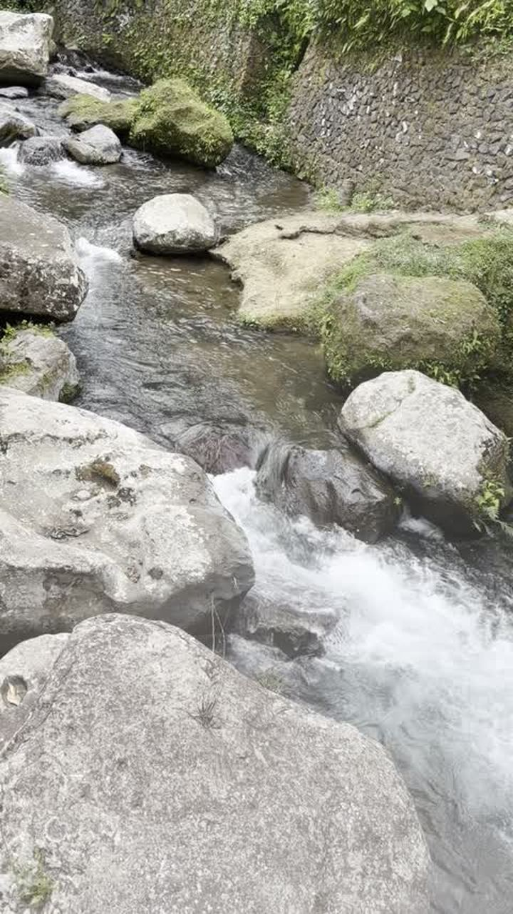
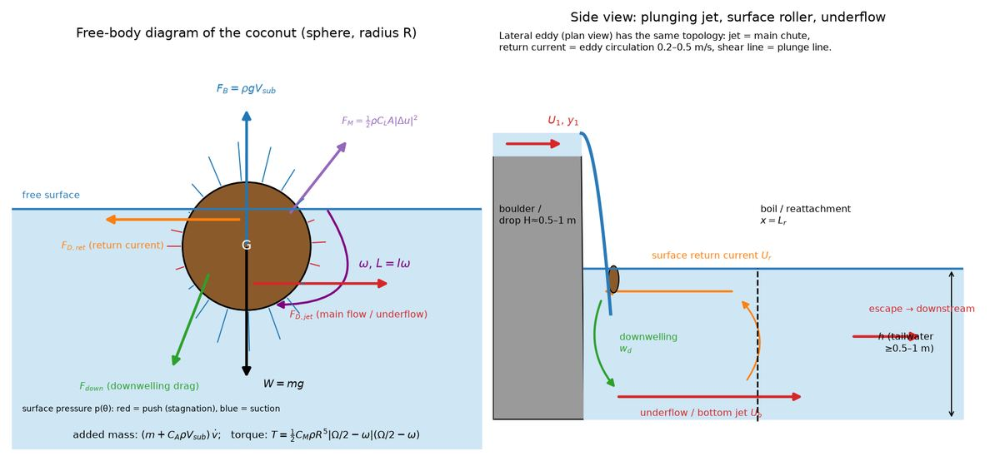

The coconut that never escapes
I filmed a coconut stuck for ages in a Bali stream, circling behind a boulder while the chute next to it roars past at about 2.5 m/s. Below, the same river seen from above. Play with it, then try to break it.
What's going on
The boulder blocks part of the river. Right behind it the main flow separates, and the slow water left in its lee turns into a lateral eddy (a recirculation zone, or dead zone). Its streamlines are closed loops. A floating body that follows them just goes round and round.
Getting out means crossing the shear layer, the thin band where the speed jumps from ~0.3 to ~2.5 m/s. There are two ways across:
- Turbulent kicks in the shear layer. Here they are an Ornstein–Uhlenbeck random velocity with σ ≈ 0.07·U.
- Getting pulled under. Water dives down along the shear line at w_d ≈ 0.3·U. A floating sphere resists with its buoyant rise speed w_b = √(8/3 · g R (1−ρc/ρw) / C_D). If w_b/w_d < 1 where the coconut is, it gets dragged into the underflow, which heads downstream. On the shear line itself the margin is below 1 at the filmed settings. The coconut survives because its orbit stays just inside the line, until a turbulent kick or a tweak of yours pushes it closer.
The coconut's horizontal motion is a reduced Maxey–Riley equation with drag, added mass (C_A = 0.5), and fluid-acceleration force:
(m + C_A ρ V_s) dv/dt = ½ ρ C_D A_w |u−v|(u−v) + (1+C_A) ρ V_s Du/DtHere V_s is the submerged volume (Archimedes: V_s = (ρc/ρw)·V) and A_w is the submerged frontal area, so a light coconut sitting high in the water feels less drag.
The flow field is analytic: a tanh shear layer in a stream function, with the flow rate rescaled so the chute speeds up next to the boulder, plus a closed cellular eddy confined to the dead zone. The boulder shelter fades out between 3.2 and 4.4 m/s, a stand-in for the boulder being overtopped and its wake swept out. The offline reduced-order model put the critical speed at ≈3.5 m/s and sweep-out at ≈4.2 m/s.

